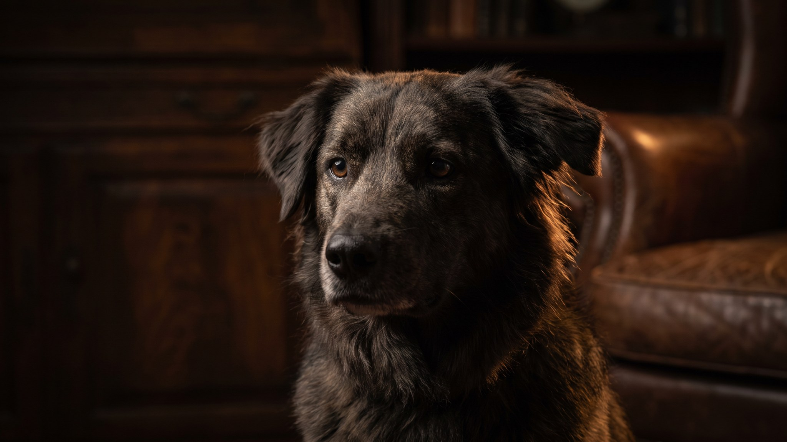

Поход к грумеру каждый месяц нужен не всегда. Пять зон на теле собаки владельцы подстригают самостоятельно, и это нормальная практика. Зимой особенно важно: реагенты с дорожек и снег набиваются в шерсть на лапах и животе, а короткая аккуратная шерсть в этих местах снижает дискомфорт и облегчает мытьё после прогулки.
🐾 Чтобы уход не держать в голове
AnimaLife напомнит, когда стричь когти, вычёсывать, купать и обрабатывать от паразитов, и заведёт дневник по вашему питомцу. Бесплатно.
Настроить напоминания → Настроить в MAX →
У вас iPhone? AnimaLife есть в App Store
Для гигиенических зон нужны ножницы с тупыми закруглёнными концами: ими безопасно работать у кожи и между пальцами. Для плотной шерсти в паховой зоне и под хвостом удобна машинка с насадкой 3–5 мм. Острые прямые ножницы подходят опытным рукам и хорошо зафиксированной собаке.
Расчёска или гребень нужны, чтобы поднять шерсть перед стрижкой и проверить результат. Лакомства держите под рукой: спокойная собака стоит ровно, взволнованная может дёрнуться в неудачный момент.
1. Шерсть между подушечками лап. Поднимите лапу и расчешите шерсть вниз между пальцами. Ножницами с тупыми концами аккуратно срежьте шерсть вровень с подушечками. Не тяните за шерсть вверх, режьте только то, что выступает ниже лапы. Частота: раз в 3–4 недели.
2. Зона под хвостом. Убирайте шерсть вокруг анального отверстия в радиусе 1–2 см. Удобнее машинкой с короткой насадкой. Держите хвост поднятым. Частота: раз в 3–4 недели.
3. Паховая зона и внутренняя поверхность бёдер. У длинношёрстных собак здесь легко образуются колтуны, а у сук шерсть загрязняется после мочеиспускания. Подстригайте коротко, без острых углов. Частота: раз в 4–6 недель.
4. Шерсть на животе. Особенно актуально зимой: грязный снег и реагенты собираются здесь при каждой прогулке. Подстригайте до длины 1–2 см. Частота: по необходимости, обычно раз в 4–6 недель.
5. Шерсть вокруг глаз (у длинношёрстных пород). Длинная шерсть на морде закрывает обзор и раздражает глаза. Используйте только ножницы с тупыми концами, работайте параллельно коже, никогда не направляйте концы к глазам. Частота: раз в 3–4 недели.
Во время стрижки осматривайте кожу. Поводом обратиться к врачу служат: покраснение, расчёсы, выпадение шерсти пятнами, неприятный запах из ушей или от кожи, колтуны, которые невозможно разобрать и которые плотно прилегают к коже. Это не косметическая проблема, а повод для осмотра.
Материал носит информационный характер и не заменяет очную консультацию ветеринара.
🐾 Заведите дневник ухода за собакой
Вес, шерсть, обработки, прививки — всё в одном месте. А если что-то смущает, AI-ветеринар ответит круглосуточно и бесплатно.
Завести дневник → Завести в MAX →
У вас iPhone? AnimaLife есть в App Store
🐾 Понравился разбор?
Подпишитесь на канал — каждый день разбираем по одному тревожному симптому у кошек и собак: что в пределах нормы, а когда пора к врачу. Подпишитесь, чтобы не пропустить разбор, который может спасти здоровье вашего питомца.